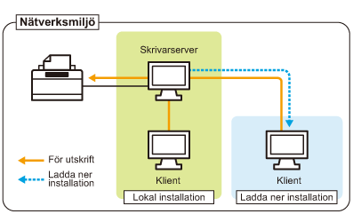

Om du använder skrivaren i en skrivarservermiljö kan du skriva ut från andra datorer (klienter) som inte är direktanslutna till skrivaren.
 |
Datorn som är direkt ansluten till skrivaren kallas "skrivarserver" och andra datorer som använder skrivaren via skrivarservern kallas "klienter".
|

Om du anger en skrivarserver får du en effektiv hantering av skrivaren enligt följande.
Du kan hantera alla klienternas utskrifter på skrivarservern.
Klienter kan ladda ned och installera skrivardrivrutinen från skrivarservern. (CD-ROM behövs inte.)
Om du vill använda skrivaren i skrivarservermiljö gör du något av följande.
Om din dator fungerar som skrivarserver
|
1.
|
Installera skrivardrivrutinen.
|
||
|
2.
|
Konfigurera skrivarservern.
|
Om din dator fungerar som klientdator
Installera skrivardrivrutinen.
Det finns två sätt att installera skrivardrivrutinen på klientdatorer: lokal installation och nedladdad installation.
<Lokal installation>
Du kan installera skrivardrivrutinen med den medföljande CD-ROM.
<Nedladdad installation>
Du kan installera skrivardrivrutinen utan att använda den medföljande CD-ROM-skivan och istället ladda ned skrivardrivrutinen från skrivarservern. Drivrutinen kan laddas ned och installeras på följande två sätt.
|
OBS!
|
||
|
Föreskrifter för att ladda ned och installera skrivardrivrutinen
Om ett 64-bitars operativsystem används på skrivarservern stöds inte den nedladdade installation för en klientdator med något av följande 32-bitars operativsystem på grund av begränsningar i Windows.
Windows 2000
Windows XP (i grundversion eller med SP1 installerat)
Windows Server 2003 (i grundversion)
|